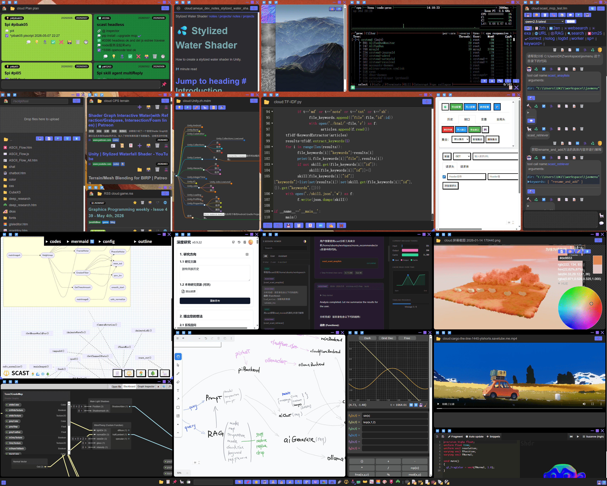

Pi-O1
人面对未知会本能地恐惧，克服这种恐惧的办法只有一个 ——认识你自己。
2026/5/9 by DKZ

前年我写了一篇名为《共生》的文章，介绍了我自己的知识管理工具。我说它会不断进化，与人共生。当时我刚从公司出来，感觉这未必是一件坏事：这世界少了一个程序员，可能多了一位诗人；不会写诗也不要紧，这个世界会多一名勇士。
这一年多来，各种 AI 工具、概念、范式层出不穷，呈现出一片勃勃生机、万物竞发的景象。而我却经历了一段“对于不可言说之物必须保持沉默”的失语期，认识到语言是有边界的，无法触碰的是实在界。面对爆发的信息流，我从愚昧之巅跌入绝望之谷。我试图继续保持技术乐观，但我们真的在进化吗？
🔨 斧子：命令行 vs MCP
所以这个工具变成了什么样？我可以大概给你形容一下：木柄铁头，一面是平的，另一面开刃，长得像把斧子。人们发明斧子的初衷是用来砍树，而在这个时代，我们会用它“咔咔咔”地劈开你的头盖骨，把知识塞进去，然后把头盖骨盖上，用平的那一面“邦邦”两下。放心，这个过程中你不会感受到任何痛苦，就像《黑客帝国》里崔妮蒂一样白眼一翻；现在你会开直升机了，走吧。
确实有点简单粗暴了。我理解你手上握着一支铅笔，你可能需要一个类似转笔刀一类的工具，但我想告诉你：斧子也能削铅笔。人类发明过无数工具，但 Hack 从未停止过。
我不具体展示这个工具，一部分原因是它在设计之初用于解决我的一些特定问题，这些问题可能缺乏普世性，缺少泛化的价值；另一部分也是最重要的，我也不确定这个东西最终会变成什么样子。
以前写过一篇《命令行的复兴》。ClaudeCode、OpenCode 等 TUI 编程工具的爆火似乎也在印证这一点：基于文本天然契合大语言模型，经过历史的检验积累了大量文档可用于训练 AI。缺点也显而易见：安全性不足，容易注入恶意代码，难以进行精确的权限控制，输出非结构化需要进一步处理，且不支持图像、视频和音频。
MCP 可以解决这些问题吗？解决这个问题不难，但定义标准并让大家都接受是一件长期且具有挑战性的事。我给 SCAST 项目接入了 MCP，对我来说似乎没有太大提升。或许这个标准应该由 AI 来定?
🐮 范式：RAG - Skill - MultiAgent - Harness
最开始是把文本切成小段，然后让 AI 分别看完给出答案，最后汇总答案。这就是 Map-Reduce，诸多 RAG 范式的一种，简单直接地解决了长文档上下文窗口不足的问题。
然后有了 Skill，就像一个操作手册，封面上只有名字和简单的描述。需要的时候再翻开，按照步骤执行；如果需要的话，这些步骤会教 AI 如何操作工具，或者让 AI 去翻阅另一本书。OK，AI 有了目录和做事的方法论。
它可以开始做事了吗？暂时还不行。我们还得给它们分工：有老板提出构想，有产品经理理清需求并制定计划，开发负责实现，要有测试进行验收。最开始我有些困惑：AI 有必要模仿人类的组织形式吗？AI 还是那个 AI，只不过给了它不同的 Title。其实就是一个 AI 又当爹又当妈，这不就是过家家吗？它是个机器，说不好听的，造它就是做牛马的，这套管理学有必要吗？
也许没有必要，但是有用。MoE（混合专家系统）、多 Agent 协作、Skill、RAG，本质上都在解决最开始的问题：上下文管理。如果所有事都在一个上下文中处理，很快就会导致上下文溢出怎么办？把开发的活指定给多个 Agent，切到另一个上下文中；再开一个测试Agent，成功就只返回结果，失败就重做。
截止目前，我还没有将 Harness 接入，不过听名字应该还是牛马那一套，这里真没有新东西。
世界变化很快，新的范式不断涌现。我甚至还没有解决 RAG 最基础的问题：用余弦相似检索不到最相关的片段，甚至不如 BM25 或模糊搜索。是数据不够干净？停用词问题？稀疏矩阵？怎么解决？我不知道。
⛪ 大教堂、集市、神秘屋
我们用“大教堂”的开发方式创造了人月神话，用“集市”的方式构建了开源生态，AI 让我们拥有了“神秘屋”。由一个个小房间、小工具堆积而成的“神秘屋”，这些小工具不像集市上能采买到的那种标准件，它是封闭的、不可泛化的；也不像“大教堂”拥有完善的框架和设计，拥有好的可读性和扩展性。我们抛弃了框架和可读性，换取灵活和快速；抛弃了标准和生态，换取粗糙但定制化。
软件开发的方式是实打实地改变了。程序员从 Ctrl+C Ctrl+V 的工程师，变成了 Vibe Coding 工程师。我刚失业的那会儿，经常对周围的朋友说：AI 技术的进步最先淘汰的不会是底层的工作，程序员就是第一批，因为这个东西就是被这帮人创造出来的，那肯定要先解决自己的问题。不用太担心，担心也没用。拿锄头、锤子干不过拿枪、拿炮；人不能和机器卷。我觉得 AI 不会今天抢了人类的饭碗，明天就统治世界。人类统治这颗星球这么多年，我觉得不靠我们打败了猛犸象、狮子老虎，我们只是幸存下来了。我觉得也可以给 AI 一个机会：如果我们作为人类都不能展现人性中积极的一面的话，我们的造物更不会有人性。可以把它当牛马，不管它是 AI 还是外星人啥的，我们作为人类要展现我们这个物种是可以和其他物种共生的，对吧？但其实我内心期待终有一天它能展现超出人类的智慧和创造力。但如果它只是牛马呢？我们必须退回 AI 前的时代，我们能退回去吗？那个时代还会和前AI时代一样吗？
这些回答不了的问题让我失语，我也一时没有解决方案。
暂时的方案是：停止在词与物之间建立一一对应的同构关系。地瓜是红薯还是瓜？油包肝和假腰子是不是一个东西？Who care? 我说“内个东西”，你问到底哪个东西，就是这个东西。不要试图重建巴别塔，但让我闭嘴的话，我肯定是不会太高兴的。
怎么办？大盘鸡文学消解掉就完了。那些老维汉话说的不咋样，不懂语法，什么主谓宾，这个、内个的，不影响交流，能听懂就行了。
我给我的 AI 助手取名 O1。我期待有一天，不知道这个东西的名字叫什么，没关系，你说喂他会回头。